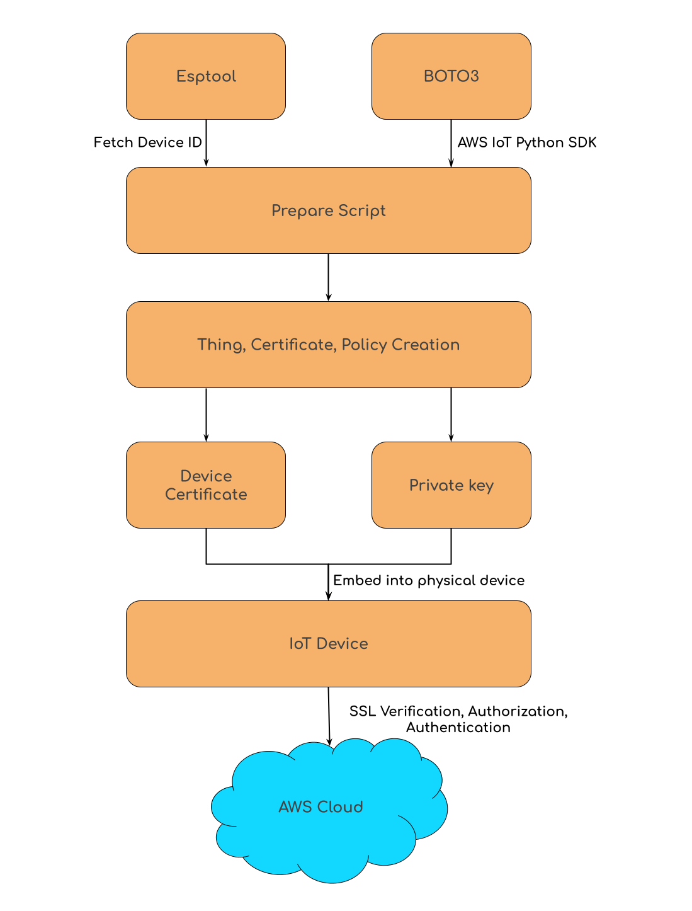

|
ESP32 Quick Start Building Blocks
|
|
ESP32 Quick Start Building Blocks
|
You will need AWS configured in your device in order to automatically access your AWS and do the various steps above. If you haven't already:
AWS Access Key ID [None]: AWS Secret Access Key [None]: Default region name [None]: Default output format [None]: ```` > For more details on AWS access keys :https://docs.aws.amazon.com/general/latest/gr/aws-sec-cred-types.html#access-keys-and-secret-access-keys
For more details on AWS CLI: https://docs.aws.amazon.com/cli/latest/userguide/cli-chap-welcome.html
source. This can be changed in the script.- The AWS certificates will be stored in a folder namedThis script is designed to be used for production firmware. Therefore, at every run, it stashes and pulls from the remote git repo. Please move ahead accordingly.
aws_credentials directory according to the current setup. You can change this in the registerDevice.py file. Make sure the directory exists before you run the script.Note:
For client authentication, AWS IoT uses X.509 certificates and private key. Client certificates must be registered with AWS IoT before a client can communicate with AWS IoT. AWS recommends that each device or client be given a unique certificate to enable fine-grained client management actions, including certificate revocation. For more visit here.
Here's the steps needed to prepare a device to be able to connect to AWS IoT servers:
As you must have realized, this can be a tedious and time-consuming task, hence inefficient for preparing large number of devices. We wanted to create a tool that automates this process to make it a layman's task to prepare as many devices as possible in the shortest time possible while maintaining simplicity and configurability. The 'Prepare Script' takes care of all 5 steps mentioned above.
The prepare script is a tool that automates the creating and flashing of devices making them ready-to-deploy with just one command, saving time in abundance. It does the following:

Along with the AWS IoT perks, this example also handles the SPIFFS integration. The unique certificates that are downloaded for each device are stored into a directory, which is then created into an image and stored into the SPIFFS partition space in the ESP32 (using the spiffsgen.py tool). The code then has provisions to read these files and use them for SSL verification and authentication.